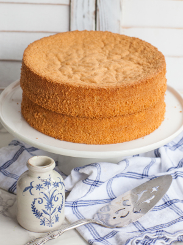
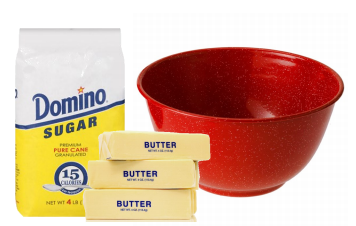
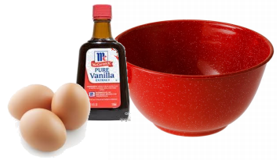
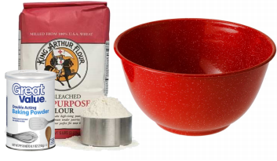
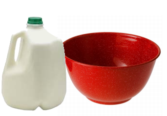
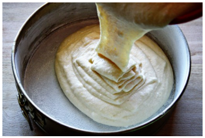
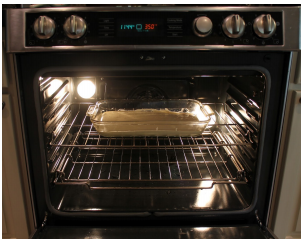

Cake
1 cup sugar
1/2 cup butter
2 eggs
2 teaspoons vanilla
1 1/2 cups flour
1 3/4 teaspoons baking powder
1/2 cup milk
Cake
Heat to 350°.
Mix sugar and butter.
Mix in the eggs and vanilla.
Mix in the flour and baking powder.
Mix in the milk.
Pour.
Bake for 40 minutes.
Eat cake.